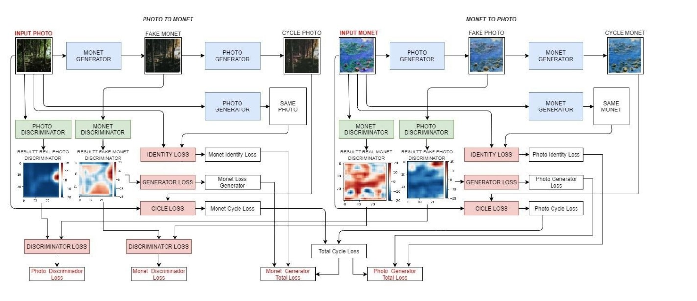
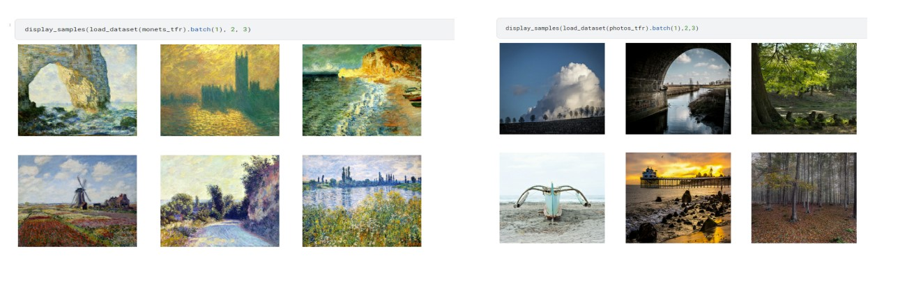
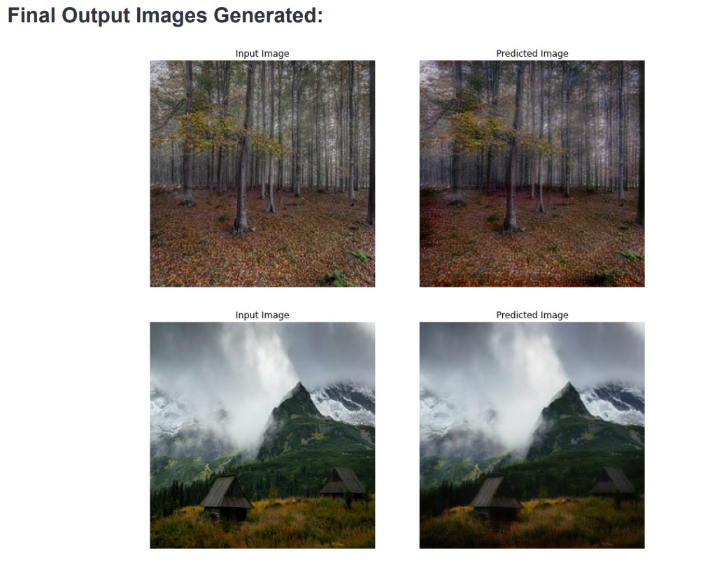

To construct a GAN architecture without any paired training examples that can capture the unique properties of one picture collection,in our instance Monet paintings, and determine how these properties can be translated into the other image collection. We implemented CycleGAN architecture to produce 7,000 to 10,000 Monet-like images that will trick the classifiers into thinking we have actually produced a true Monet.

Generative Adversarial Networks (GAN) uses a generator and a discriminator. The generator has to generate images that are accepted by the discriminator. The discriminator tries to discover the images that are not real and reject the images generated by the generator. CycleGAN uses a loss of cycle consistency to allow training without the need for paired data.
The model taking an input image from domain DA which is fed to our first generator Generator A→B whose job is to transform a given image from domain DA to an image in target domain DB. This new generated image is then fed to another generator GeneratorB→A which converts it back into an image, CyclicA, from our original domain DA. This output image must be close to the original input image to define a meaningful mapping that is absent in unpaired dataset.
Dataset 

Thank You!!